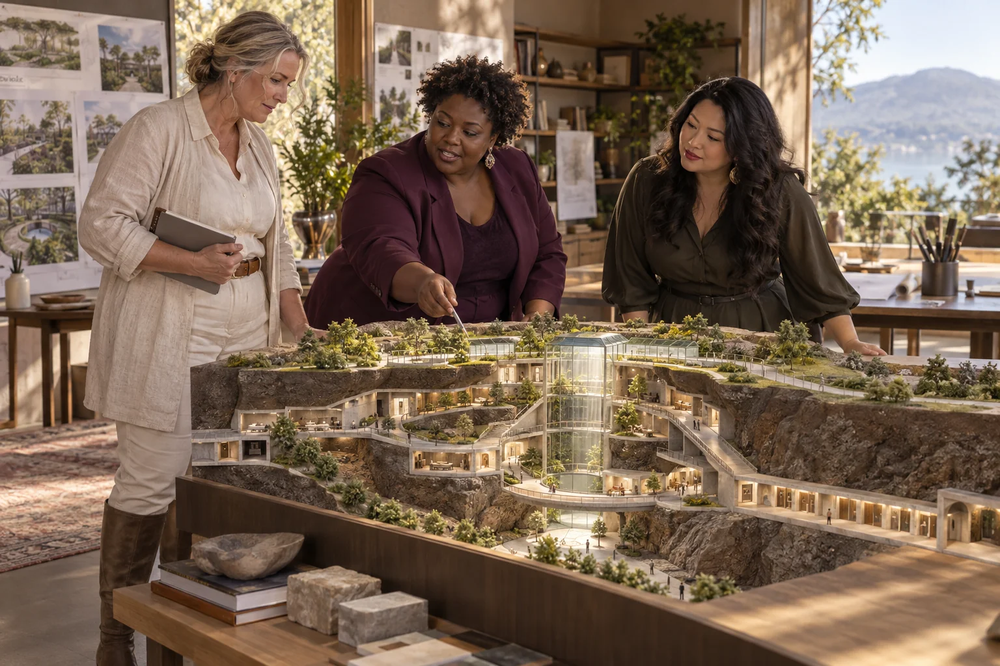

Choose a clearly bounded collection purpose and use fictional records or authorised non-sensitive metadata.

500 Queens / DNA RNA Embryo Ark
DNA RNA Embryo Ark
Explore biological preservation as an institution-led stewardship and continuity question.
Follow the connections. Choose your direction.
The need worth working on.
The DNA RNA Embryo Ark title combines very different materials, purposes and ethical responsibilities. A preservation concept must first state whose material is involved, why it would be held, who may decide its use and what continuing care requires. It must not treat people, embryos or cultural relationships as interchangeable items in a technical archive.
What the enterprise could offer.
Begin with a non-biological information model for an existing authorised collection or a fictional conservation scenario. Document provenance, permissions, storage dependencies, access decisions and continuity arrangements. Any work involving human genetic material or embryos belongs with appropriately authorised institutions and specialist ethical and legal review, separate from this planning exercise.
People to build with
- Authorised conservation or research collections
- Data and provenance specialists
- Institutional ethics and stewardship teams
A fictional collection continuity exercise
Map ownership, consent, permitted uses, storage dependencies and the people responsible for decisions.
Run scenarios involving a funding interruption, record error or disputed access request.
Have qualified collection and ethics specialists review the model and identify missing obligations.
The first result
A stewardship data model, continuity plan and list of questions requiring institutional resolution.
What needs to be demonstrated.
Speculative concept
The starting evidence
The catalogue provides an ark ambition, not a biological collection, preservation protocol or consent framework.
The open question
What materials and purpose are intended, whether preservation is technically appropriate and who would legitimately govern it.
The next measurement
Traceability of each fictional record and the ability to resolve continuity and access scenarios.
Build the means to deliver.
Useful capabilities and resources
- Authorised collection expertise
- Specialist ethical and legal advice
- Non-sensitive test records
A possible business model
Collection information management or continuity planning may be a practical service. Biological preservation requires a distinct institutional programme.
A leadership decision to practise
Define legitimate stewardship and participant rights before discussing storage scale or a civilisation-resilience claim.
People, consequences and decisions.
- Different biological materials require different treatment.
- Consent and future use can be misunderstood.
- Long-term preservation creates obligations beyond a startup's life.
If equality were being designed now...
- Who would have authority over any women's biological material, its future use and the choice to restrict or withdraw access?
- Can women affected by a collection shape its purpose and governance without pressure to contribute personal material?
Begin with women's own experiences across bodies, ages, cultures and places. Invite disagreement and choose a practical change together.
Create a women-led design brief →Build your learning council.


Build alongside these ideas.
Subterranean citiesEternal Maintenance
Make long-term maintenance visible, funded and possible for the people who must do it.
Practical pilot
Subterranean citiesEternal Human Life Support
Study resilient life-support services without claiming that an engineered habitat can sustain people forever.
Speculative concept
Humanities and funRadical Life Extension
Explore longevity research with a clear boundary between scientific questions and promises to people.
Research frontier
Follow existing public concept work.
Connected public conceptGrain by Grain
A documentary concept connects everyday life with long-term resilience, existential threats and a seven-generation civilisation story.
Connected public conceptFuture of Life 2045
Explore possible futures for relationships, living systems, intelligence, movement, science and culture.
From the original suggestion to a working brief.
Original concept from 500 Queens VC NEW Long, slide 16; current context from the September 2026 planning document. This expanded brief and pilot are proposed development, not evidence of an operating enterprise or confirmed partnership.
Original title: DNA RNA Embryo Ark. The pilot, business model and learning connections on this page are proposed developments of that original idea.